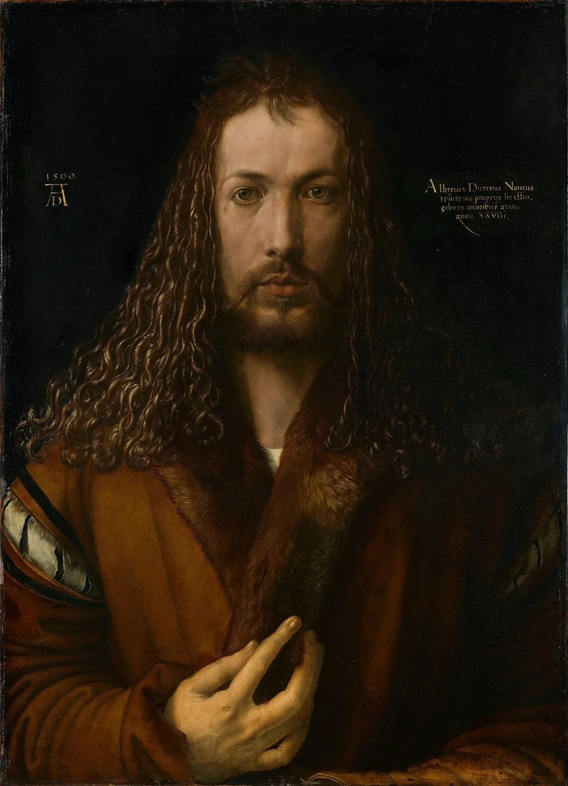

Image
Self-portraits
Dürer made his own image a subject — a pact with the viewer that turned the artist into author, figure and signature.
01


Image
Dürer made his own image a subject — a pact with the viewer that turned the artist into author, figure and signature.
01